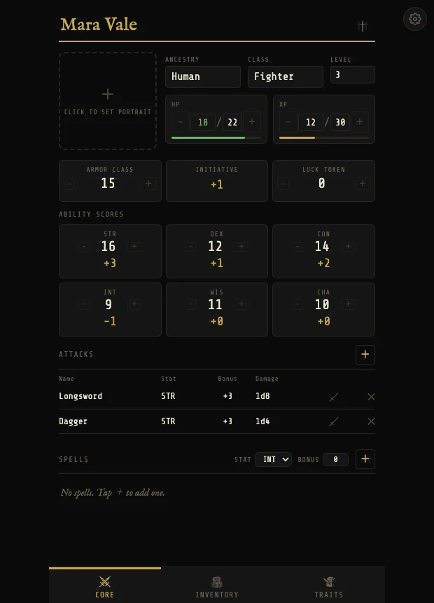
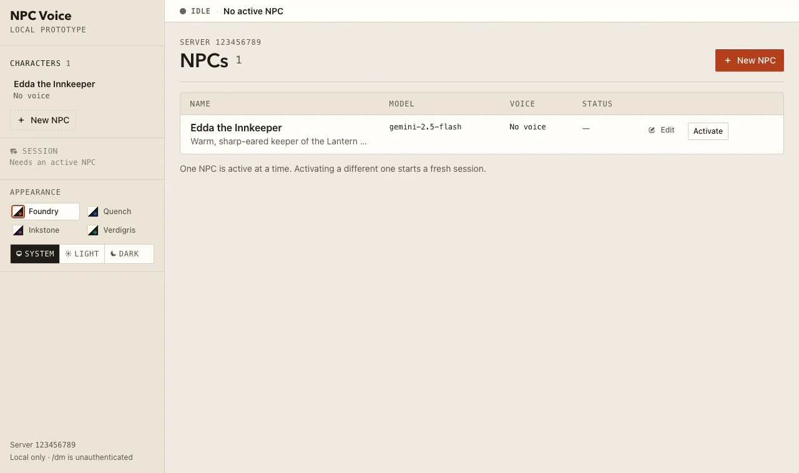

The Dark Spire — TaleSpire Character Sheet
A digital Shadowdark character sheet for TaleSpire and standalone browsers, bringing character stats, inventory, spells, and dice-roll integration together.
Senior Software Developer
Delivering quality software on budget.
A selection of personal projects built with AI-assisted development, from tabletop gaming tools to more ambitious applications that integrate AI directly.

A digital Shadowdark character sheet for TaleSpire and standalone browsers, bringing character stats, inventory, spells, and dice-roll integration together.

An atmospheric countdown timer for torches and light spells in TaleSpire, with animated visuals, playback controls, and duration adjustments.

An agent-guided workflow for turning reviewed 2D dungeon descriptions into TaleSpire slabs, supported by deterministic validation, overlays, and export tools.

A local prototype for AI-driven NPC conversations, with a web control panel and integrations for language generation, speech recognition, and voice synthesis. Discord voice integration is still in development.
Contact
For professional opportunities or to request my CV, connect with me on LinkedIn.
Connect on LinkedIn